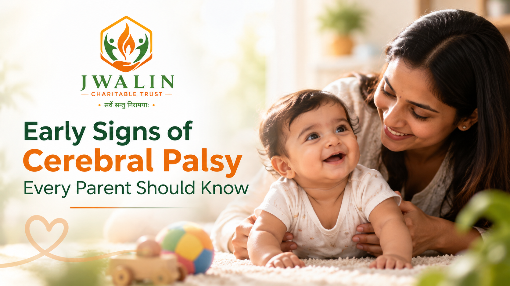

Early Awareness
Early Signs of Cerebral Palsy Every Parent Should Know
Every parent treasures a baby's first smile, first roll and first steps. Sometimes, though, a child's movements or milestones seem different from what is expected, and worry follows. Knowing the early signs of cerebral palsy (CP) helps families ask the right questions at the right time.
Read more